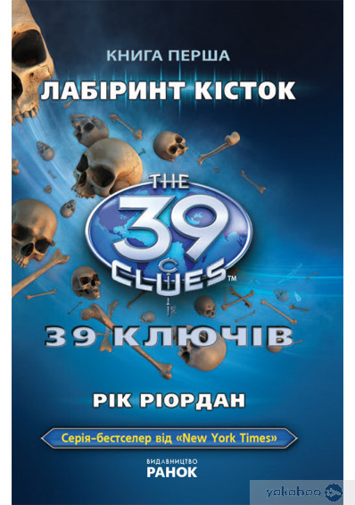
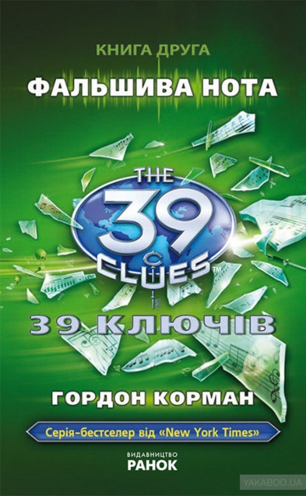

Читання книг. Це може виглядати дивно, але мені подобається. Взаглі вільний час я використовую по-різному. Люблю слухати музику, дивитись фільми,серіали,аніме, а ще слухати відомих людей різних часів :). Із спорту мені подобається волейбол і теніс. Але найбільше задоволення я отримую від читаннч книг :). У кожної людини є вільний від навчання або роботи час, яким вона може розпоряджатися за своїм бажанням. Світ наших захоплень - це величезний і цікавий світ.Багато хто кажуть, що читати — це немодно і нецікаво. Ось комп’ютер — це круто. Дійсно, комп’ютер, інтернет — це улюблене захоплення багатьох молодих людей, яка нерідко переростає в залежність. Я теж часто звертаюся до комп’ютера і розумію, що в майбутньому без інтернету і комп’ютера не обійтися. Але моїм улюбленим захопленням було і залишається читання книг. Читаючи книгу, я, з одного боку, відпочиваю. З іншого боку, дізнаюся багато нового і цікавого. Якщо я не знаходжу потрібну мені книгу вдома, в бібліотеці або у знайомих, я звертаюся до інтернету. Але книга, яку читаєш, лежачи на дивані, здається тепліше. Її можна погортати, потримати в руці, а якщо книга твоя, то можна зробити якісь помітки. Деяким подобається читати електронну книгу. Але це, як кажуть, справа смаку. Іноді виникає питання: «Читання — це хобі чи праця?» Я вважаю, що це і хобі, і в той же час праця. Адже читаючи книгу, ми не тільки відпочиваємо, але і працюємо розумово, замислюємося над різними питаннями, поставленими у творі.
Любов до книг мені прищепили батьки. З дитинства ми відвідували бібліотеки та завжди брали по декілька книг одразу :). Єдиною проблемою є те, що вільного часу стає все менше і сьогодні я вже рідко коли читаю, а заплановані книги продовжують чекати на поличці :(.
Однак, коли нагода все таки випадає, я поринаю у світ фантазій та образів героїв, про яких читаю. Це дуже захоплює.
У мене є багато улюблених книг, одна з яких називається "39 ключів".
Ця книга — міжавторський цикл пригодницьких фантастичних романів, який розпочав автор Рік Ріордан. В першій серії описуються пригоди чотирнадцятирічної дівчини Емі і її одинадцятирічного брата Дена.
Перша книга серії «Лабіринт кісток» відразу ж після виходу отримала популярність. Якщо коротко, "Лабіринт кісток" — перша книга в серії, написана Ріком Ріорданом та опублікована 9 вересня 2008 року. Бабуся Емі та Дена, Грейс Кехіл, змінила її заповіт незадовго до смерті. На похороні її адвокат Вільям Макентайр розповідає Дену, Емі та їхнім іншим родичам про вибір між мільйоном доларів та шансом на участь у полюванні на ключі. Конкурентами Емі та Дена у змаганні стають: сімейство Голтів, Алістер Оу, трійнята Старлінги, Ян і Наталі Кабри, Йона Візард та Ірина Спаська. Вони знаходять приховану бібліотеку і підказку. Виконання підказки, захованої в бібліотеці Грейс, веде до інституту Франкліна. Там Ден і Емі виявляють, що Бенджамін Франклін заховав підказку в Парижі. Після того, як вони переконали їхню няню Неллі, щоб вона допомогла їм, Емі і Ден вирушають до Парижа, де йдуть слідом шифрів і пасток, які ведуть їх до катакомб під містом.
Книга 2. Фальшива нота — друга книга в серії, була написана Гордоном Корманом і опублікована 2 грудня 2008 року. По дорозі до Відня Голти здійснюють спробу викрадення у Емі, Дена та Неллі підказки до наступного ключа, але знаходять лише пошматовані Саладіном (їхнім котом) папірці. На щастя, завдяки своїй фотографічній пам'яті Ден зумів відтворити усе на тканині після того, як родичі пішли. Підлітки вирушають до будинку Вольфганга Амадея Моцарта, вже там прокрадаються вниз до бібліотеки на пошуки щоденника Марії Анни Моцарт, більш відомої, як Нанерль - сестри всесвітньовідомого композитора, проте виявляють викраденим його Йоною Візардом. Тепер їхня черга викрадати щоденник у Йони, що й вони успішно проробили. Нотатки Нанерль приводять їх до Зальцбурга - міста, в якому народився Моцарт, але там їхні пошуки призупиняє вибух, підлаштований, на думку дітей, людиною в чорному, адже той ледь не завжди зустрічався їм незадовго до чергового лиха. Однак, постарався, як виявилося, Алістер Оу. В помсту за це, підлітки підкидають "жучок", знайдений у Саладіна, у ціпок Алістера, поки той спить. Наступна зупинка - Венеція. Вже там брат із сестрою проникають до штаб-квартири Янусів і викрадають у родичів дуже цінну підказку. Змушені втікати, не помічають, як опиняються в руках Кабра. Правда, ті відпускають їх, нічого не знайшовши, оскільки Ден та Емі завбачливо заховали артефакт Янусів у подушці на човні незадовго до їх викрадення. Розшифрувавши підказку, діти проникають до музею. Та Кабра знову дають про себе знати. Вони перші пробираються до клавесина заграти заповітні рядки, знайдені на вирваних сторінках щоденника Нанерль. Однак, п'ята нота виявилася замінованою, стався вибух, Ян непритомніє. Ден стріляє дротиком з пістолета в Наталі, дівчинка приєднується до брата. Емі вдається дограти мелодію і знайти другий ключ - Тунгстен, та пару японських мечів - підказку до наступного пункту призначення.
Загалом усіх книг в циклі разом налічується 26, які разом об'єднанні у 4 томи. Без сумніву, всі вони дуже цікаві і захоплюють уже з перших сторінок. А ще, читаючи їх можна значно розширити свої знання про світ, відомих людей та винаходи. Я з нетерпінням чекаю екранізацію фільму, який вже почали знімати і взагалі рекомендую усім прочитати першу книгу цієї серії, бо далі ви самі захочите продовження :).
Сайт виконав Владислав Жовновський :)
=======Читання книг. Це може виглядати дивно, але мені подобається. Взаглі вільний час я використовую по-різному. Люблю слухати музику, дивитись фільми,серіали,аніме, а ще слухати відомих людей різних часів :). Із спорту мені подобається волейбол і теніс. Але найбільше задоволення я отримую від читаннч книг :). У кожної людини є вільний від навчання або роботи час, яким вона може розпоряджатися за своїм бажанням. Світ наших захоплень - це величезний і цікавий світ.Багато хто кажуть, що читати — це немодно і нецікаво. Ось комп’ютер — це круто. Дійсно, комп’ютер, інтернет — це улюблене захоплення багатьох молодих людей, яка нерідко переростає в залежність. Я теж часто звертаюся до комп’ютера і розумію, що в майбутньому без інтернету і комп’ютера не обійтися. Але моїм улюбленим захопленням було і залишається читання книг. Читаючи книгу, я, з одного боку, відпочиваю. З іншого боку, дізнаюся багато нового і цікавого. Якщо я не знаходжу потрібну мені книгу вдома, в бібліотеці або у знайомих, я звертаюся до інтернету. Але книга, яку читаєш, лежачи на дивані, здається тепліше. Її можна погортати, потримати в руці, а якщо книга твоя, то можна зробити якісь помітки. Деяким подобається читати електронну книгу. Але це, як кажуть, справа смаку. Іноді виникає питання: «Читання — це хобі чи праця?» Я вважаю, що це і хобі, і в той же час праця. Адже читаючи книгу, ми не тільки відпочиваємо, але і працюємо розумово, замислюємося над різними питаннями, поставленими у творі.
Любов до книг мені прищепили батьки. З дитинства ми відвідували бібліотеки та завжди брали по декілька книг одразу :). Єдиною проблемою є те, що вільного часу стає все менше і сьогодні я вже рідко коли читаю, а заплановані книги продовжують чекати на поличці :(.
Однак, коли нагода все таки випадає, я поринаю у світ фантазій та образів героїв, про яких читаю. Це дуже захоплює.
У мене є багато улюблених книг, одна з яких називається "39 ключів".
Ця книга — міжавторський цикл пригодницьких фантастичних романів, який розпочав автор Рік Ріордан. В першій серії описуються пригоди чотирнадцятирічної дівчини Емі і її одинадцятирічного брата Дена.
Перша книга серії «Лабіринт кісток» відразу ж після виходу отримала популярність. Якщо коротко, "Лабіринт кісток" — перша книга в серії, написана Ріком Ріорданом та опублікована 9 вересня 2008 року. Бабуся Емі та Дена, Грейс Кехіл, змінила її заповіт незадовго до смерті. На похороні її адвокат Вільям Макентайр розповідає Дену, Емі та їхнім іншим родичам про вибір між мільйоном доларів та шансом на участь у полюванні на ключі. Конкурентами Емі та Дена у змаганні стають: сімейство Голтів, Алістер Оу, трійнята Старлінги, Ян і Наталі Кабри, Йона Візард та Ірина Спаська. Вони знаходять приховану бібліотеку і підказку. Виконання підказки, захованої в бібліотеці Грейс, веде до інституту Франкліна. Там Ден і Емі виявляють, що Бенджамін Франклін заховав підказку в Парижі. Після того, як вони переконали їхню няню Неллі, щоб вона допомогла їм, Емі і Ден вирушають до Парижа, де йдуть слідом шифрів і пасток, які ведуть їх до катакомб під містом.
Книга 2. Фальшива нота — друга книга в серії, була написана Гордоном Корманом і опублікована 2 грудня 2008 року. По дорозі до Відня Голти здійснюють спробу викрадення у Емі, Дена та Неллі підказки до наступного ключа, але знаходять лише пошматовані Саладіном (їхнім котом) папірці. На щастя, завдяки своїй фотографічній пам'яті Ден зумів відтворити усе на тканині після того, як родичі пішли. Підлітки вирушають до будинку Вольфганга Амадея Моцарта, вже там прокрадаються вниз до бібліотеки на пошуки щоденника Марії Анни Моцарт, більш відомої, як Нанерль - сестри всесвітньовідомого композитора, проте виявляють викраденим його Йоною Візардом. Тепер їхня черга викрадати щоденник у Йони, що й вони успішно проробили. Нотатки Нанерль приводять їх до Зальцбурга - міста, в якому народився Моцарт, але там їхні пошуки призупиняє вибух, підлаштований, на думку дітей, людиною в чорному, адже той ледь не завжди зустрічався їм незадовго до чергового лиха. Однак, постарався, як виявилося, Алістер Оу. В помсту за це, підлітки підкидають "жучок", знайдений у Саладіна, у ціпок Алістера, поки той спить. Наступна зупинка - Венеція. Вже там брат із сестрою проникають до штаб-квартири Янусів і викрадають у родичів дуже цінну підказку. Змушені втікати, не помічають, як опиняються в руках Кабра. Правда, ті відпускають їх, нічого не знайшовши, оскільки Ден та Емі завбачливо заховали артефакт Янусів у подушці на човні незадовго до їх викрадення. Розшифрувавши підказку, діти проникають до музею. Та Кабра знову дають про себе знати. Вони перші пробираються до клавесина заграти заповітні рядки, знайдені на вирваних сторінках щоденника Нанерль. Однак, п'ята нота виявилася замінованою, стався вибух, Ян непритомніє. Ден стріляє дротиком з пістолета в Наталі, дівчинка приєднується до брата. Емі вдається дограти мелодію і знайти другий ключ - Тунгстен, та пару японських мечів - підказку до наступного пункту призначення.
Загалом усіх книг в циклі разом налічується 26, які разом об'єднанні у 4 томи. Без сумніву, всі вони дуже цікаві і захоплюють уже з перших сторінок. А ще, читаючи їх можна значно розширити свої знання про світ, відомих людей та винаходи. Я з нетерпінням чекаю екранізацію фільму, який вже почали знімати і взагалі рекомендую усім прочитати першу книгу цієї серії, бо далі ви самі захочите продовження :).
Сайт виконав Владислав Жовновський :)
>>>>>>> fa06f34b2d2301dd41b73dfa43623e4aa915477b